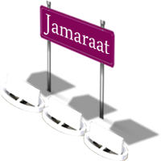
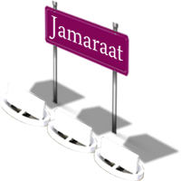

Makkah 1
The Ka’bah door 1

Makkah 2
The Ka’bah door 2

Makkah 3
Al-Haram door from outside

Makkah 4
Outside night view of Al-Haram

Makkah 5
Sa’y between Safa and Marwah 1

Makkah 6
Sa’y between Safa and Marwah 2

Makkah 7
Safa and Marwah (2nd floor) 1

Makkah 8
Safa and Marwah (2nd floor) 2

Makkah 9
Safa and Marwah (2nd floor) 3

Makkah 10
Safa and Marwah (2nd floor) 4

Makkah 11
The Court of Al-Haram 1

Makkah 12
The Court of Al-Haram 2

Makkah 13
Tawaaf at Al-Haram Court 1

Makkah 14
Tawaaf at Al-Haram Court 2

Makkah 15
Al-Haram Court during Hajj 1

Makkah 16
Al-Haram Court during Hajj 2

Throwing the Jamaraat 1
Throwing of the pebbles 1

Throwing the Jamaraat 2
Throwing of the pebbles 2

Throwing the Jamaraat 3
Pilgims on the Jamaraat bridge

Throwing the Jamaraat 4
Pilgrims going to Jamaraat

Throwing the Jamaraat 5
Throwing of the pebbles 3

Throwing the Jamaraat 6
Throwing of the pebbles 4

Throwing the Jamaraat 7
Throwing of the pebbles 5

Throwing the Jamaraat 8
Throwing of the pebbles 6


Supplication said when mounting an animal or any means of transport:
Supplication said when mounting an animal or any means of transport:“Allaahu akbar, Allaahu akbar, Allaahu akbar, subhaana allathee sakhkhara lana hatha wama kunna lahu muqrineen, wa-innaila rabbina lamunqaliboon, allaahumma inna nas-aluka fee safarina hatha albirra wattaqwa, waminal`amali ma tardha, allaahumma hawwin `alayna safarana hatha, watwi `anna bu`dahu, allaahumma anta as-sahibu fis-safar, walkhaleefatu fil-ahli, allaahumma innee a`oothu bika min wa`thaais-safar, w a k a – a a b a t I l – m a n t h a r, wasoo-il munqalabi fil-mail wal-ahl”. “Allaah is the greatest, Allaah is the greatest, Allaah is the greatest, How perfect He is, The One Who has placed this (transport) at our service, and we ourselves would not have been capable of that, and to our Lord is our final destiny. O Allaah, we ask You for acts of righteousness and piety in this journey of ours, and we ask You for deeds which please You. OAllah, facilitate our journey and let us cover its distance quickly. O Allaah, You are The Companion on the journey and The Successor over the family, O Allah, I take refuge with You from the difficulties of travel, from having a change of hearts and being in a bad predicament, and I take refuge in You from an ill-fated outcome with wealth and Family”.
Upon returning, the same supplication is recited with the following addition: “Ayaiboon, taa-iboon, `abidoon, lirabbina haamidoon.” “We return, repent, worship and praise our Lord.”
Supplication of the resident for the traveler: “Astawdi`u Allaaha deenaka, wa amaanaatika, wakhawaateema a`maalika.” “I place your religion, your faithfulness and the ends of your deeds in the trust of Allaah.”
Supplication of the traveler for the resident: “Astawdi`ukun Allah allathe laa tadee`u wadaa-i`uhu.” “I place you in the trust of Allaah, Whose trust is never misplaced.”
The Meeqaat
Thul-Hulayfah:this is the Meeqat of the people of Madeenah and whoever passes by their rout. Today, it is called Abyaar Ali and it is 450km away from Makkah.
Al-Juhfah:This is the Meeqat of the people of Ash-Shaam (Syria, Palestine, Jordan and Lebanon), Morocco, Egypt and whoever passes by their rout. It is situated near the town of Raabigh and it is 183 km away from Makkah.
Qarnul-Manaazil:This is the Meeqaat of the people of Najd and whoever passes by their route. Today, it is called As-Sayl Al-Kabeer and it is 75 km away from Makkah.
Yalamlam: This is the Meeqaat of the people of Yemen and whoever passes by their route. It is 94 km away from Makkah.
The Meeqaat of the people of Makkah: The people of Makkah- as well as those who reside in it and who are not originally from Makkah- should assume the state of Ihram for Hajj from their homes, as regards for 'Umrah, they should assume the state of Ihram outside the boundaries of Makkah, like at At-Tan'eem. However, the people who do not live within the Meeqaat, like the people of Jeddah, then they should assume the state of Ihram from their homes or from where they initiate the intention of Hajj.
Hajj First Aid
Sun burns: We advise you not to expose yourself to the sun for a long time; you may avoid this by carrying an umbrella that protects from the sun and you should drink plenty of liquids.
Stomach diseases:We advise you to consume serum that protects from some stomach diseases and you should not eat anything before washing it property. Also, you should only drink fresh mineral water (drinkable water).
Heart, Lung, Diabetic and Asthma patients: We advise you to take your medicine regularly and not overburden yourself and you should avoid overcrowding. It is important to go the nearest Health Center when necessary.
First Aid: We advise you to take a first aid kit that contains medicines and some necessary medical products, whether it is the medicines of the pilgrim or general important medicines to deal with some emergency cases, like taking some oral rehydration salt solutions, fever reducers, pain killers, medicine for flu, and creams for skin burns and inflation, as well as dressings, cotton and antiseptic solution (for a potential injury).
The 8th Thul-Hijjah
- On this day (Tarwiyah Day), a pilgrim performing Hajj At-Tamatt`u should assume Ihraam again from where he is staying saying: “Labbayk Allaa-humma Hajjan”. It is recommended that he performs Ghusl (a ritual bathe), perfumes himself, but not his pilgrim-age garments. As for those performing either Ifraad or Qiraan Hajj, then they should have already assumed Ihram from the Miqaat and remained in that state.
- If one fears that something may happen to prevent him from continuing Hajj, then he should add when assuming Ihraam (at the end of the abovementioned Talbiyah): “If anything hinders me from continuing, then the place where my state of Ihraam is terminated. “However, one should not say this if he\she does not expect anything to prevent him\her from completing Hajj.
- It is better to leave for Minaa in the morning before zenith.
- In Minna, the pilgrims pray 5 prayers; Thuhr, ‘Asr, Maghrib and ‘Ishaa’ of the 8th and Fajr of the 9th (`Arafah day). Thuhr,`Asr and `Ishaa` are shortened to two Rak`as, but are not combined. One should increase remembrance of Allah and supplication, and repeat Talbyah (“Labbayka Allaahumma labbayk. laa shareeka laka labbayka. Innaalhamda wna-n’imata laka walmulk, laa shareek lak”).
- Talbiyah continues until `Eed Day when one starts throwing the pebbles (Jamaraat).
The 9th of Thul-Hijjah
- On this day (`Arafah day), one should hear to the area of mount `Arafah after sunrise and stay there until sunset.
- It is preferable to pray Thug rans `Asr at `Arafah, shortened and combined during the time of Thuhr.
- One should make sure they stay within the boundaries of `Arafaat, but not necessary standing on mount `Arafaat.
- One should spend that day glorifying Allah, supplicating and asking forgiveness, raising their hands in supplication as did the Prophet, sallallaahu alayhi wa sallam. One may also recite the Quran or utter Talbiyah.
- After sunset, on `Arafah day, one should quietly and reverently leave for Muzdalihaf in compliance with the advice of the Prophet, sallallaahu alayhi wa sallam.
- In Muzdalifah, the pilgrim combines Maghrib and `Ishaa prayers, shortening the `Ishaa` prayer to two Rak`as.
- It is mandatory to spend the night in Muzdalifah and perform the Fajr prayer of the next day in Muzdalifah.
- Old man, women and weak people
The 10th of Thul-Hijjah
- On `Eed Day, and before the sun rises, one should head to Minaa to throw the pebbles.
- One should walk calmly, repeating Talbiyah throughout the way.
- Upon reaching Jamaratul-`Aqabah, one should stop saying Talbiyah and stone the seven pebbles saying: “Allaah-u-Akbar” at each throw.
- After stoninh Jamaratul-`Aqabah, the pilgrim goes to slaughter his sacrifice himself, or he may appoint somebody else to do it. He eats of it and feeds the poor.
- The final rite on this day is to shave one’s hair or shorten it. Shaving, however, is more rewarding. Women cut the length of fingertip of their hair.
- Stoning Jamaratul-`Aqabah, and shaving the head or trimming the hair symbolize the end of the first phase of the state of Ihraam and the lifting of its restriction, expect for sexual intercourse with one’s spouse.
- It is recommended after this for one to bath and perfume himself.
- After performing all the aforementioned steps, one should go to Makkah.
The 11th of Thul-Hijjah
- After Tawaaf Al Ifaadhah one should return to Minaa and spend the days of Tashreeq there (11Th, 12Th, and 13Th of Thul-Hijjah).
- The first two nights are an obligatory rite of Hajj and must be fulfilled and the third one is optional.
- During each of the days, one should stone the three stone pillars called “Jamaraat” (small, medium, and Jamaratul-`Aqabah) saying: “Allaah-u-akbar” with each throw of the seven pebbles, stoned successively at each pillar.
- The time of stoning the three Jamaraat is after zenith. It is commendable, after stoning the first and the second Jamarah, to face the direction of the Qiblah and supplicate to Allah. However, this is not be done after stoning the largest Jamarah (Jamaratul-`Aqabah).
The 12th of Thul-Hijjah
- One should stone the three stone pillars called “Jamaraat” (small, medium and Jamaratul-`Aqabah) saying: “Allaah-u-akbar” with each throw of the seven pebbles, stoned successively at each pillar
- The time of stoning the three Jamaraat is after zenith. It is commendable, after stoning the first and the second Jamrah, to face the direction of the Qiblah and supplicate to Allaah. However, this is not to be done after stoning the largest Jamarah (Jamaratul-`Aqabah).
- Those who choose not to spend the extra night in Mina should leave Mina before sunset of this day, or else they are obliged to spend the night there.
The 13th of Thul-Hijjah
- Those who choose to spend this extra night should stone the three stone pillars called “Jamaraat” (small, medium and Jamaratul-`Aqabah) saying: “Allaah-u-akbar” with each throw of the seven pebbles, stoned successively at each pillar.
- The time of stoning the three Jamaraat is after zenith. It is commendable, after stoning the first and the second Jamrah, to face the direction of the Qiblah and supplicate to Allaah. However, this is not to be done after stoning the largest Jamarah (Jamaratul-`Aqabah).
- The farewell Tawaaf is the final rite of Hajj. When one intends to go home then one should go to Makkah and perform the Farewell Tawaaf around the Ka`bah and let that be the last thing they do in Makkah.
- Women in their menstrual or postnatal period are exempted from this Tawaaf.